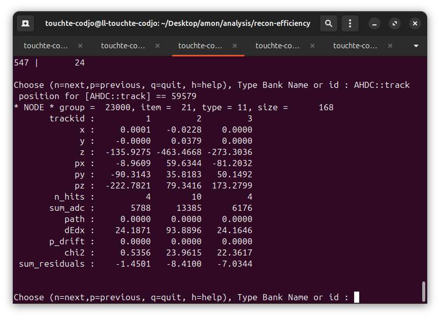

The AHDC::track is not welll filled
Lognumber 26.
Submitted on Wed, 30 Jul 2025 - 12:02:49 CEST
Marker: priority/regular
Send to:
Indeed, the residual and the chi2 and dEdx were assumed to be the same as the AHDC::kftrack bank: to be corrected!
Attachments (1)
1.
